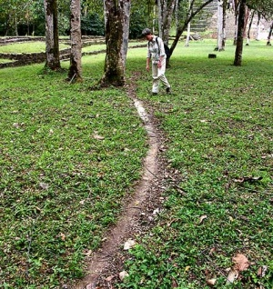

Bei der Haltung zu beachten
| Dieser Artikel wurde zur Überarbeitung vorgeschlagen. Hilf mit, ihn zu verbessern!
Begründung: Form - Bericht? Artikel? --DmdM 14:37, 9. Nov. 2011 (CET) |
Sollte man sich dafür entscheiden in die Ameisenhaltung einzusteigen, sind Überlegungen, die über die Beschaffung und die Haltung selbst hinausgehen. Denn hat man erst einmal die richtigen Haltungsparameter gefunden, kann es bei vielen Arten sehr schnell zu einem sehr hohen Anstieg der Population kommen.
Eine Ameisenkolonie kann 10, 20, ja mehr Jahre überleben. Sich eine Ameisenkolonie zuzulegen bedeutet die Gleiche Verantwortung und den gleichen Zeitaufwand in Kauf zu nehmen wie beim Erwerb eines anderen Haustieres. Speziell bei Jugendlichen ist die Zeit und die Möglichkeit genügend Platz bereitzustellen oft nicht oder nur beschränkt gegeben. Dies sollte vor der Beschaffung einer Ameisenkolonie gewährleistet werden. Wer kennt nicht betagte Eltern, die das einst geliebte Kuscheltier ihrer längst erwachsenen Kinder noch immer getreulich, wenngleich unwillig versorgen?
{kind=link}

Auf Ameisen übertragen: Auch sie sind lebende, lange lebende Tiere, die über entsprechend lange Zeiträume betreut werden müssen.
Also muss überlegt werden, wer in den nächsten Jahren während eventueller Urlaubsreisen, Klassenfahrten, und evtl. Krankheit zuverlässig zur Verfügung steht, jemand, der täglich die Ameisen mit Futter versorgt, und speziell bei nicht heimischen Ameisensn die Feuchtigkeit kontrolliert, die Ausbruchsicherung überwacht und ggf. erneuert, und alles was überdies anfällt. Hunde- und Katzenpensionen gibt es bereits, Ameisenpensionen gibt es bisher noch nicht.
Schließlich kommt der Zeitpunkt, wo man z.B. wegen Studiums, Ausbildung, Wehr- oder Zivildienst das Elternhaus verlässt und die Tiere nicht unbedingt mitnehmen kann oder möchte.
Wer da einheimische Ameisen aus seiner näheren Umgebung hat, kann sie einfach wieder freilassen. Wer Exoten hält, hat nur wenig Auswahl: Einige Händler bietet zwar eine Rücknahme bereits gehaltener Kolonien an, aber in diesem Fall sollte man sich eventuell auf Kosten einstellen, da der Transport irgendwie organisiert und finanziert werden muss. Die Chance seine größere Ameisenkolonie über sogenannte "Marktplätze" in Ameisenforen, eher Kleinanzeigen loszuwerden hat sich mit der Anzahl der Benutzer diverser Foren in den Letzen Jahren erhöht. Allerdings kann dies auch eine Weile dauern, garantierte Abnahme gibt es auch hier nicht. Ob Eltern im Zweifelsfall so großmütig sind, und die Ameisenkolonien ihrer Sprösslinge bis zum seligen Ende pflegen, ist zu bezweifeln. Bleibt nicht selten nur das gewissenhafte Abtöten der exotischen Kolonien (KEINESFALLS die Kolonien in einem solchen Fall in die Freiheit entlassen).
Diesen Gesichtspunkt sollte man zuallererst durchdenken, ggf. auch mit den Eltern durchsprechen, noch bevor man ernsthaft an die Planung eines Formikars und die Anschaffung von Ameisen geht. Das wenigstens rät Euch:
Euer A. Buschinger
Haltung von Atta-Arten
Arten dieser Gattung privat zu halten sollte man sich sehr gründlich überlegen. Neu gegründete Kolonien sind ganz hübsch zu betrachten, vor allem weil sie zu diesem Zeitpunkt noch einen gewissen Überblick zulassen. Bei guter Pflege jedoch wachsen solche Kolonien in einer unglaublichen Geschwindigkeit. Die räumlichen Möglichkeiten in einer Privatwohnung oder gar einem Jugendzimmer können dann sehr bald ausgereizt sein. Hinzu kommt ein mitunter sehr großer Aufwand bei der Futterbeschaffung, Reinigung, Anbau weiterer Pilzbecken auf zusätzlichen Regalen usw. .
{kind=link}
Das Bild zeigt eine der ersten in Deutschland gehaltenen Atta-Kolonien, im Institut für Angewandte Zoologie an der Universität Würzburg, mit dessen Leiter Prof. Dr. K. Gößwald.
Die Zeitungsaufnahme entstand ca. 1967, etwa drei Jahre nach Gründung der Kolonie. Nicht nur der abgebildete Raum (ca. 12 qm) war ringsum mit pilzgefüllten Becken zugestellt. Armdicke Plastikschläuche führten durch die Wände sowie quer über den Flur in weitere 3 oder gar 4 Räume. In einem davon war eine etwa 3 qm große Betonwanne als Futter-Arena ausgelegt. 5-6 Mitarbeiter/innen des Instituts waren fast permanent mit der Beschaffung von Pflanzenmaterial und der übrigen Pflege der Kolonie beschäftigt. Wobei sich besonders im Winter die Futterbeschaffung für derart große Kolonien problematisch darstellt.
Man muss sich wirklich überlegen, ob man so etwas stemmen kann. Es erinnert ein wenig an das Problem, dass aus einem niedlichen, kleinen Welpen dann womöglich doch ein stattlicher Bernhardiner aufwächst. Der Futterbedarf der wachsenden Kolonie ist vor dem Kauf und der Pflege nicht abzusehen. Regelmäßige Verkleinerung der Kolonie durch Entnahme und Vernichtung (häufig die letzte Möglichkeit) von Teilen der Pilzgärten samt Ameisen wird manchem wehtun. Eine „Bonsai“-Haltung wäre auch nicht gerade artgerecht.
Siehe auch
Weblinks
- Weitere Bilder zu Atta-Nestern gibt es im z.B. hier (blueboard.com).
- Beratung zum Haltungseinstieg mit Blattschneiderameisen (ameisenforum.de)
{kind=link}